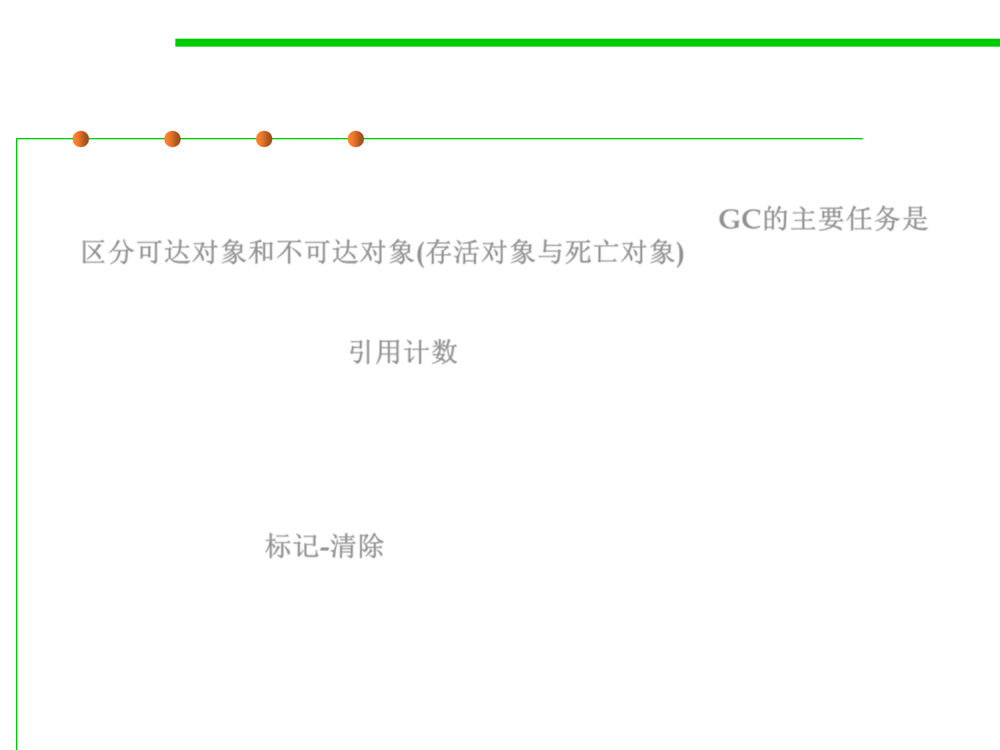

8.1 Metrics, Principles, and Methods of Construction for Performance
The basic algorithms of GC
▪ The main task of GC is to separate the reachable objects from the
unreachable ones( live objects from dead objects). GC的主要任务是
区分可达对象和不可达对象(存活对象与死亡对象)
▪ Reference counting: 引用计数
– Keep a note on each object, indicating the number of live references to the
object. If an object’s reference count goes to zero, throw the object out (it’s
dead).
▪ Mark-Sweep: 标记-清除
– Put a note on objects you need (roots).
– Then recursively put a note on anything needed by a live object.
– Afterwards, check all objects and throw out objects without notes.